DAVID G. SIMPSON
Personal Web Site
ALASKA PHOTO ALBUM: PAGE 5
| 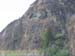 A Dall sheep walking around on a very steep mountainside, as seen from the train from Whittier to Anchorage. |
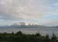 Scenery from the train on from Whittier back to Anchorage. |
|
| 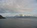 Scenery from the train on from Whittier back to Anchorage. |
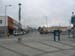 Later in the week, I visited the town of Seward. This is the downtown area. |
|
| 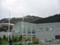 Seward has a very nice Alaska SeaLife Center, where I spent most of the day. |
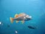 Fish at the Alaska SeaLife Center. |
|
| 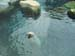 A harbor seal at the Alaska SeaLife Center. |
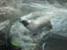 A harbor seal at the Alaska SeaLife Center. |
|
| 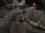 A puffin at the Alaska SeaLife Center. |
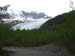 On the way from Seward back to Anchorage, I stopped here at Exit Glacier. |
|
| 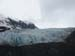 Exit Glacier. I got to walk up and touch the glacier near the terminus. Although it looks like snow, the glacier is actually made of granulated ice. |
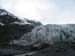 The terminus of Exit Glacier. This is a piedmont glacier, so its terminus is on land. Note the stream of meltwater coming from beneath the glacier. |
{kind=link}
{kind=link}
{kind=link}
{kind=link}
{kind=link}
{kind=link}
{kind=link}
{kind=link}
{kind=link}
{kind=link}
{kind=link}
{kind=link}
| <<< Previous | Page 5 of 6 | Next >>> |
|---|
Contact Information
I may be contacted at: